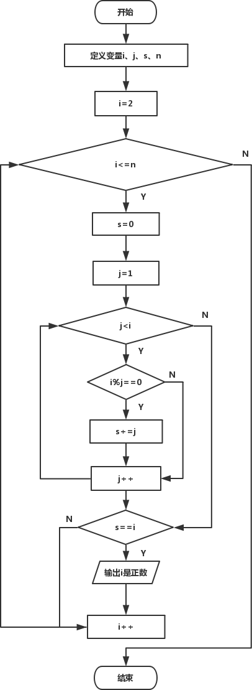

首页 > 编程笔记
C语言求完数（完全数）（详解版）
问题描述
求某一范围内完数的个数。如果一个数等于它的因子之和，则称该数为“完数”（或“完全数”)。例如，6的因子为1、2、3，而 6=1+2+3，因此6是“完数”。
问题分析
根据完数的定义，解决本题的关键是计算出所选取的整数i（i的取值范围不固定）的因子（因子就是所有可以整除这个数的数），将各因子累加到变量s (记录所有因子之和），若s等于i，则可确认i为完数，反之则不是完数。算法设计
对于这类求某一范围（由于本题范围不固定，在编程过程中采用键盘输入的方式）内满足条件的数时，一般釆用遍历的方式，对给定范围内的数值一个一个地去判断是否满足条件，这一过程可利用循环来实现。本题的关键是求出选取数值i的因子，即从1到i-1范围内能整除i的数，看某一个数j是否为i的因子，可利用语句if(i%j==0)进行判断，求某一个数的所有因子，需要在1到i-1范围内进行遍历，同样釆用循环实现。因此，本题从整体上看可利用两层循环来实现。外层循环控制该数的范围2〜n；内层循环j控制除数的范围为1〜i，通过i对j取余，是否等于0，找到该数的各个因子。
另外应注意每次判断下一个选定数之前，必须将变量s的值重新置为0，编程过程中一定要注意变量s重新置0的位置。
程序流程图：

下面是完整的代码：
#include<stdio.h>
int main()
{
int i, j, s, n; /*变量i控制选定数范围，j控制除数范围，s记录累加因子之和*/
printf("请输入所选范围上限：");
scanf("%d", &n); /* n的值由键盘输入*/
for( i=2; i<=n; i++ )
{
s=0; /*保证每次循环时s的初值为0*/
for( j=1; j<i; j++ )
{
if(i%j == 0) /*判断j是否为i的因子*/
s += j;
}
if(s == i) /*判断因子这和是否和原数相等*/
printf("It's a perfect number:%d\n", i);
}
return 0;
}
运行结果：请输入所选范围上限：10000↙︎
It's a perfect number:6
It's a perfect number:28
It's a perfect number:496
It's a perfect number:8128
知识点补充
上述程序中求某数的因子时，釆用从1到i-1范围内进行遍历的方法，一个数一个数地去试。这种方法可以做到没有遗漏，但是效率不高。对于某一整数来说，其最大因子为n/2 (若n为偶数时，若为奇数最大因子小于n/2），在n/2〜n-1范围内没有数据可以整除此数。据此，我们可以把遍历范围缩小至1〜n-1，这样程序效率可以提高一倍。相应程序如下：
#include<stdio.h>>
int main()
{
//...
for( i=2; i<=1000; i++)
{
s=0;
for( j=1; j<=n/2; j++ )
{
if(i%j == 0)
s += j;
}
//...
}
}
关注公众号「站长严长生」，在手机上阅读所有教程，随时随地都能学习。内含一款搜索神器，免费下载全网书籍和视频。

微信扫码关注公众号